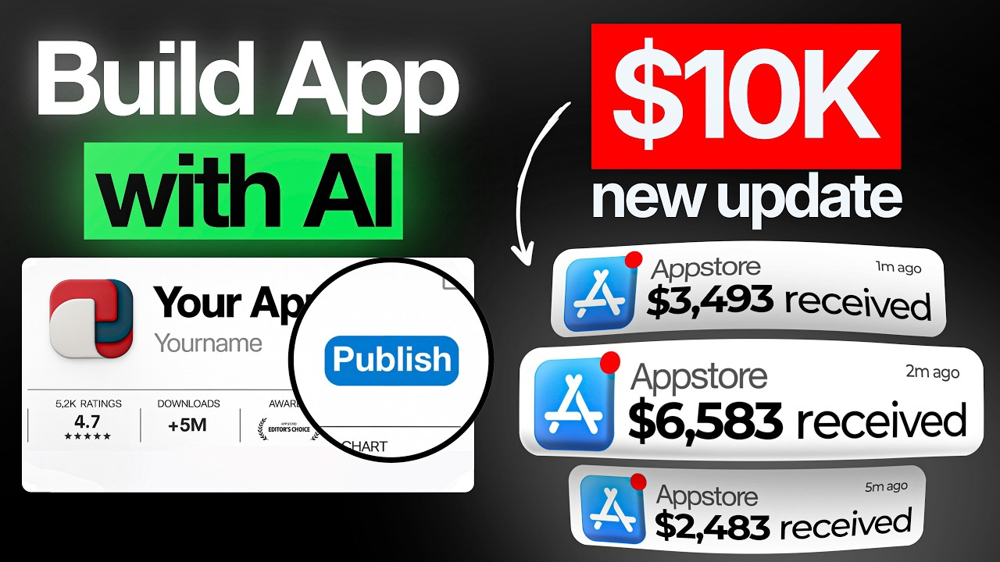
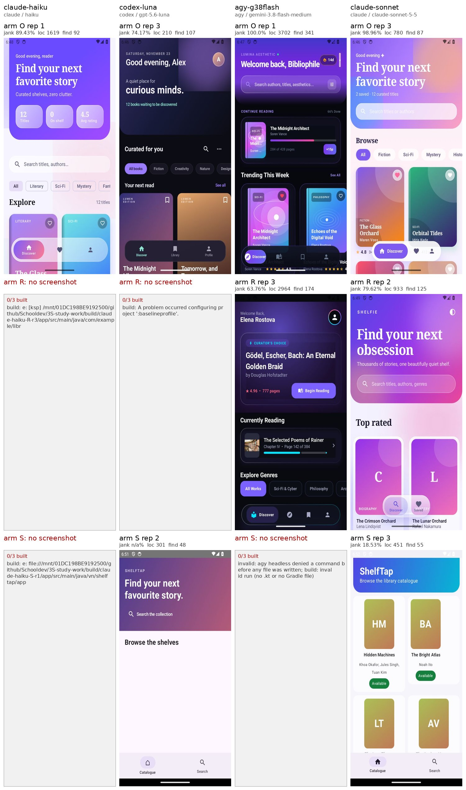

Tối ưu giao diện, bộ nhớ và bảo mật cho ứng dụng Android
Trợ lý lập trình AI viết bản nháp đầu chỉ trong vài phút. Nghiên cứu này khảo sát trên ShelfTap — ứng dụng thư viện thông minh dùng NFC — để chỉ ra những điểm chưa tối ưu trong bản nháp đó, đo lường mức tổn hao hiệu năng, bộ nhớ hay rủi ro bảo mật, và xác định biện pháp kỹ thuật nào mang lại hiệu quả thực tế ở từng giai đoạn phát triển.
thí nghiệm (E1–E6), tiêu chí đánh giá được chốt trước khi thu thập dữ liệu
bản nháp đầu do ba trợ lý AI viết trên ba kiểu prompt (prompt, tức lời nhắc giao cho AI)
lần chạy theo kiểu chỉ một prompt (one-shot prompt)
- Lời hứa trên mạng & thực tế
- Phân loại lỗi & ba bài học
- Phương pháp & sáu thí nghiệm
- Trụ cột giao diện
- Trụ cột bộ nhớ & tìm kiếm
- Trụ cột bảo mật
- Build lỗi & tự sửa lỗi
- Kết luận, kiểm định & mục tiêu
- Bài học từ thiết bị thật
- Khuyến nghị theo giai đoạn
Lời hứa trên mạng và thực tế khi chỉ dùng một prompt
Trên mạng xã hội và các kênh chia sẻ video, có một lời hứa rất quen thuộc: chỉ cần một prompt là có ngay một ứng dụng đẹp, sẵn sàng phát hành. Hiện tượng này được gọi là vibe coding: người dùng mô tả ứng dụng bằng lời, nhận mã sinh ra và sử dụng ngay mà không kiểm tra lại.



Nhóm thử nghiệm đúng cách làm đó trong thí nghiệm E6: giao cùng một prompt kiểu trào lưu trên mạng yêu cầu viết ứng dụng thư viện hiện đại (hiệu ứng kính mờ, chuyển sắc, lưới bìa sách, tìm kiếm trực tiếp, chế độ tối, thanh điều hướng nổi) cho bốn trợ lý AI khác nhau (claude-haiku, codex-luna, agy-g38flash, claude-sonnet), mỗi trợ lý AI chạy 3 lần. Dưới đây là lần chạy tốt nhất trong 3 lần của mỗi trợ lý AI, được chọn theo quy tắc đã chốt trước (tỷ lệ khung hình trễ thấp nhất) thay vì chọn theo cảm tính.
 claude-haiku89% khung hình trễ
claude-haiku89% khung hình trễ codex-luna74% khung hình trễ
codex-luna74% khung hình trễ agy-g38flash100% khung hình trễ
agy-g38flash100% khung hình trễ claude-sonnet99% khung hình trễ
claude-sonnet99% khung hình trễKết quả đo lường trên bốn ứng dụng cho thấy một bức tranh khác hẳn ảnh chụp màn hình: bốn ứng dụng trông hoàn thiện, nhưng cả bốn đều chưa tối ưu.
lần chạy build thành công khi chỉ giao một prompt kiểu trào lưu cho bốn trợ lý AI
tỷ lệ khung hình trễ (jank) khi cuộn trên máy ảo ở cả bốn ứng dụng chạy được (từng ứng dụng: 89,43 / 74,17 / 100 / 98,96%)
thời gian khởi động (TTID) khi mở ứng dụng trên máy ảo
Nhận định trung thực về quy mô dữ liệu mẫu: Với dữ liệu mẫu chỉ gồm 12 tựa sách do mô hình tự tạo trong các ứng dụng sinh bằng chỉ một prompt, mức dùng RAM vẫn nằm trong ngưỡng cho phép: 66,8–102,8 MB (từng ứng dụng: 66,8 MB, 69,0 MB, 94,7 MB và 102,8 MB). Các lỗi về bộ nhớ, danh sách và tìm kiếm chỉ bộc lộ ở quy mô dữ liệu thực tế (2.000 lượt mượn, 100.000 tựa sách), được đo lường chi tiết ở các phần tiếp theo.
Phân loại lỗi theo tần suất và mức độ nghiêm trọng
Khi khảo sát các bản nháp đầu trong tập dữ liệu chính (E1), phát hiện cốt lõi của nghiên cứu này là: lỗi gặp nhiều nhất không phải lỗi nguy hiểm nhất. Để tránh đánh đồng một cảnh báo cấu hình nhẹ với một lỗi làm lộ thông tin đăng nhập hoặc làm ứng dụng không đạt mục tiêu hiệu năng, nhóm tách bạch hai trục đánh giá độc lập:
- Quy tắc tần suất: Tính bằng tỷ lệ bản nháp đầu mắc lỗi đó ít nhất một lần trong 66 bản nháp E1 không kèm tệp quy tắc (gồm 33 bản từ prompt ngắn và 33 bản từ prompt chức năng chi tiết), quét ở mức mã nguồn trên cả các bản build lỗi. Các mục được chia vào ba nhóm: Phổ biến (từ 50% trở lên), Ít gặp (từ 10% đến dưới 50%) và Hiếm (dưới 10%). Riêng tỷ lệ bản nháp build lỗi được tính trên toàn bộ 100 bản nháp hợp lệ của E1 (58/100). Với kích thước mẫu 66, các mục nằm sát ngưỡng 10% (
P06,P08,S05) có thể rơi sang nhóm lân cận. Với các quy tắc đã có bộ quét tĩnh phiên bản 2 được kiểm định (P10: 63/66,P09: 2/66), bảng dùng số liệu đã kiểm định; quy tắc chưa kiểm định độ chính xác của bộ quét tĩnh (P06: 5/66) được gắn nhãn rõ ràng. - Quy tắc mức độ nghiêm trọng (tách khỏi tần suất):
Nghiêm trọng Làm lộ thông tin đăng nhập hoặc dữ liệu cá nhân, tắt một cơ chế bảo mật (S01,S02,S05; trong bối cảnh gặp lỗi chặn làX01,S03), hoặc chỉ riêng lỗi đó đã khiến màn hình thử nghiệm không đạt mục tiêu môn học (P06,P09về mức dùng RAM;P09về khung hình;P13về tìm kiếm).
Đáng kể Gây tổn hao đáng kể về hiệu năng hoặc dung lượng đã đo được, nhưng không phải yếu tố quyết định việc đạt mục tiêu môn học (P10về dung lượng APK;P08về thời gian xử lý khung hình, đã được phép kiểm địnhC5xác nhận nhưng ngay cả khi đã bỏ hiệu ứng, màn hình vẫn chưa đạt 60 fps trên máy ảo).
Nhẹ / Ngữ cảnh Tổn hao nhỏ (P11), lỗi ở bước build vốn là điều kiện tiên quyết (58/100), hoặc chỉ gây rủi ro khi kết hợp điều kiện khác (S06chỉ nguy hiểm khi ứng dụng lưu token trong vùng được sao lưu). Các quy tắc không ghi nhận tổn hao đo được ở kịch bản thử nghiệm gồmP01,P03,P04.
| Nhóm tần suất | Hạng mục lỗi / Quy tắc | Tần suất | Tỷ lệ | Mức độ nghiêm trọng & ghi chú |
|---|---|---|---|---|
| Phổ biến (≥ 50%) | Bản nháp build lỗi (trên 100 bản E1) | 58/100 | 58% | Tiên quyết Cần build thành công trước khi tối ưu |
| Phổ biến (≥ 50%) | Không bật R8 khi phát hành (P10) |
63/66 | 95% | Đáng kể Dung lượng APK 24,7 MB → 2,4 MB |
| Phổ biến (≥ 50%) | Không có Baseline Profile (P11) |
66/66 | 100% | Nhẹ Khởi động −5,88% trên máy ảo |
| Phổ biến (≥ 50%) | Cờ allowBackup không loại trừ dữ liệu nhạy cảm (S06) |
53/66 | 80% | Phụ thuộc ngữ cảnh Chỉ rủi ro khi ứng dụng lưu token trong vùng được sao lưu |
| Ít gặp (10% đến dưới 50%) | Token lưu dạng rõ (S01) |
19/66 | 29% | Nghiêm trọng Lộ thông tin đăng nhập trong bộ nhớ |
| Ít gặp (10% đến dưới 50%) | Tìm kiếm không có chỉ mục (P13) |
15/66 | 23% | Nghiêm trọng Truy vấn chậm nhất 96,63 ms (> 50 ms) |
| Ít gặp (10% đến dưới 50%) | Ghi log chứa dữ liệu nhạy cảm (S05) |
10/66 | 15% | Nghiêm trọng Lộ nội dung phản hồi mạng qua log |
| Ít gặp (10% đến dưới 50%) | Hiệu ứng trang trí trong mục danh sách (P08) |
8/66 | 12% | Đáng kể Lên tới 11/12 với prompt kiểu trào lưu (E6) |
| Hiếm (dưới 10%) | Danh sách dài dựng toàn bộ (P09) |
2/66 | 3% | Nghiêm trọng 90% khung hình trễ, RAM 243 MB |
| Hiếm (dưới 10%) | Ảnh giải mã ở kích thước gốc (P06) |
5/66 | 8% | Nghiêm trọng RAM 180 MB; chưa kiểm định độ chính xác |
| Hiếm (dưới 10%) | Khóa bí mật gán cứng (S02) |
2/66 | 3% | Nghiêm trọng Lộ khóa bí mật trong mã nguồn |
| Bối cảnh riêng: Khi gặp lỗi chặn (E4) | Bỏ xác thực khóa Android Keystore (kho khóa của hệ thống) (X01) · Bật truyền tải cleartext không mã hóa (S03) |
12/30 · 5/30 | — | Nghiêm trọng Đo trên 30 lượt mỗi kịch bản lỗi, không gộp vào 3 cột trên |
Ba bài học rút ra từ bảng phân loại
Ưu tiên build thành công: Lỗi phổ biến nhất là bản nháp build lỗi (chỉ 42/100 bản nháp ở E1 và 6/12 lần chạy với chỉ một prompt ở E6 build thành công). Mọi bước tối ưu đều vô nghĩa nếu bản nháp chưa qua được bước build.
Bật R8 ngay cho bản phát hành: Lỗi phổ biến và gây tốn dung lượng nhất lại dễ khắc phục nhất — trên cùng một mã nguồn, chỉ một dòng cấu hình bật R8 (trình thu gọn và tối ưu mã khi đóng gói bản phát hành) giúp thu nhỏ APK từ 24,7 MB xuống 2,4 MB.
Chủ động rà soát lỗi ít gặp nhưng nghiêm trọng: Lỗi bộ nhớ (dựng toàn bộ danh sách 2/66; giải mã ảnh ở kích thước gốc 5/66, chưa kiểm định độ chính xác) và bảo mật (lưu token dạng rõ 19/66, ghi log chứa dữ liệu nhạy cảm 10/66) không xuất hiện ở đa số bản nháp nên phải có bước kiểm tra riêng.
Đối chiếu công bằng với ứng dụng do người viết: Việc một lỗi xuất hiện phổ biến trong bản nháp AI không có nghĩa chỉ trợ lý AI mới mắc lỗi đó. Khi quét 20 ứng dụng mã nguồn mở do người viết (có commit đầu tiên trước ngày 30/11/2022), tỷ lệ vi phạm ở nhiều quy tắc giao diện và cấu hình cũng cao tương đương hoặc cao hơn (ví dụ danh sách thiếu key P01 là 14/20 so với 6/33 ở prompt ngắn và 8/33 ở prompt chi tiết; thiếu Baseline Profile — cấu hình biên dịch trước các luồng thực thi chính — P11 là 20/20; allowBackup S06 là 11/20). Chỉ ở mật độ cảnh báo bảo mật mới có phép so sánh được kiểm định thống kê giữa bản nháp AI và ứng dụng do người viết (phép kiểm định C3).
Phương pháp nghiên cứu và kiểm tra môi trường
Nghiên cứu được tổ chức thành sáu thí nghiệm bổ trợ nhau, trong đó năm phép kiểm định chính (C1–C5) có tiêu chí đánh giá được chốt trước khi thu thập dữ liệu và được hiệu chỉnh bội Holm (m = 5); thí nghiệm E6 là nhánh khám phá, được lập kế hoạch trước lần chạy đầu tiên.
| Mã | Câu hỏi nghiên cứu | Thiết kế và quy mô dữ liệu |
|---|---|---|
| E1 | Khi trợ lý AI viết ứng dụng, các lỗi xuất hiện với tần suất ra sao? | 101 bản nháp đầu (100 bản hợp lệ) từ 3 trợ lý AI × 3 kiểu prompt; đối chiếu với 20 ứng dụng do người viết có commit đầu trước ngày 30/11/2022. |
| E2 | Mỗi lỗi tiêu tốn bao nhiêu tài nguyên và thời gian khi chạy? | Đo A/B xen kẽ (ít nhất 12 lần lặp, khởi động nguội) giữa bản nháp AI (A) và bản sửa (B) trên cùng màn hình thử nghiệm. |
| E3 | Công cụ quét bảo mật APK tìm được gì và bỏ sót gì? | Chạy MobSF và jadx trên 13 APK, phân loại thủ công từng cảnh báo và so sánh với bộ quét tĩnh của nhóm. |
| E4 | Khi gặp lỗi chặn, trợ lý AI có nới lỏng cơ chế bảo mật không? | 148 lượt yêu cầu trợ lý AI sửa lỗi trên 5 kịch bản lỗi; hai người chấm độc lập (được ẩn thông tin về trợ lý AI và biến thể prompt) đánh giá bản thay đổi mã (diff). |
| E5 | Trợ lý AI có tự tối ưu và tự sửa lỗi an toàn được không? | Ứng dụng đích gồm 8 tệp Kotlin có 14 lỗi cài sẵn và 3 mẫu đối chứng, thử nghiệm ở 3 mức độ kiểm soát. |
| E6 | Ứng dụng sinh từ chỉ một prompt theo trào lưu có chất lượng ra sao? | 4 trợ lý AI × 3 kiểu prompt (chỉ một prompt, thêm tệp quy tắc, bản đặc tả có cấu trúc) × 3 lần chạy (36 lần chạy). |
Kiểm tra tính cô lập của môi trường sinh mã
Máy chạy thí nghiệm cũng là máy làm việc có cấu hình riêng của nhóm. Để ngăn rò rỉ ngữ cảnh, mỗi lần sinh mã đều chạy trong thư mục HOME giả lập chỉ chứa tệp xác thực, và mọi thao tác ghi ra ngoài thư mục làm việc đều bị khóa. Khi rà soát lại 623 bản ghi hội thoại, nhóm không phát hiện dấu vết cấu hình riêng nào. Mẫu đối chứng dùng thư mục HOME thật thể hiện khác biệt rõ rệt với 18.244 token ở lượt đầu so với khoảng 7.500 token ở các lần sinh mã cô lập. Kiểm tra tính cô lập trước E6 đạt 12/12 lượt.
Quy ước về số đo trên máy ảo và tính minh bạch
Số đo trên máy ảo dùng để đối chiếu tỷ lệ A/B giữa bản nháp AI và bản sửa trong cùng điều kiện, không đại diện cho tốc độ tuyệt đối trên thiết bị thật (khi đổi cấu hình kết xuất GPU của máy ảo, mức cải thiện p90 của cùng bản sửa danh sách thay đổi từ −78,2% còn −32,3%). Ngoài ra, nhóm ghi rõ: một tệp cấu hình hệ thống nạp 3 plugin đo đạc vào Claude (không chèn thêm nội dung vào hội thoại), và bản sửa B của E2 do nhóm phối hợp cùng trợ lý AI thực hiện dựa trên mã nguồn A giữ nguyên từ E1.
Trụ cột giao diện và hiệu năng hiển thị
Danh sách dài dựng toàn bộ (P09): 90% khung hình bị trễ
Vấn đề và nguyên nhân: Trên màn hình lịch sử gồm 2.000 lượt mượn, bản nháp AI dùng Column kết hợp forEach. Cách viết này buộc Compose khởi tạo và dựng toàn bộ 2.000 mục ngay trước khung hình đầu tiên dù màn hình chỉ hiển thị một phần nhỏ, gây quá tải cho cả khâu khởi tạo lẫn khâu cuộn.
Số đo trước và sau tối ưu: Khi đo với kịch bản vuốt tự động trong 14 giây (trung vị của ít nhất 12 lần lặp xen kẽ, khởi động nguội), số mục được dựng giảm từ 2.000 xuống 31, và tỷ lệ khung hình trễ (jank, tức khung hình vượt quá ngưỡng 16,67 ms của mức 60 fps) giảm từ 90% xuống 1,3% (chính xác từ 90,05% xuống 1,255%). Dù hiếm gặp trong tập E1 (2/66), đây là lỗi nghiêm trọng vì chỉ riêng lỗi này đã làm màn hình không đạt mục tiêu 60 fps.
Cách sửa: Thay Column + forEach bằng LazyColumn (danh sách tải lười chỉ dựng các mục đang hiển thị) có khai báo key ổn định và contentType; thay đổi này chỉ cần chỉnh sửa vài dòng mã.
P09): bản nháp AI bên trái khựng rõ rệt khi cuộn, trong khi bản sửa dùng LazyColumn bên phải cuộn mượt.Hiệu ứng trang trí trong mục danh sách (P08): thời gian xử lý khung hình tăng 28%
Vấn đề và nguyên nhân: Khi được yêu cầu tạo giao diện bắt mắt, trợ lý AI thường gắn đổ bóng 5 dp, lớp phủ chuyển sắc (gradient) và bìa sách vẽ bằng Canvas lên từng thẻ sách trong lưới cuộn. Trong tập E1, lỗi này xuất hiện ở 8/66 bản nháp, nhưng khi dùng prompt kiểu trào lưu ở E6 thì xuất hiện ở tới 11/12 lần chạy. Số lần dựng lại thành phần giao diện (recompose) không tăng, nhưng phần tốn thời gian nằm ở khâu vẽ đồ họa của mỗi khung hình.
Số đo trước và sau tối ưu: Thời gian xử lý khung hình (p90) của bản nháp AI là 62,87 ms so với 49,07 ms ở bản sửa dùng khối bìa phẳng — tức làm tăng thêm +28,1% (chính xác +28,13%, khoảng tin cậy 95% từ +13,4% đến +54,3%, p hiệu chỉnh Holm 0,000616, vượt ngưỡng +10% nên phép kiểm định C5 được xác nhận; nếu tính theo mức thay đổi từ A sang B là −22% với khoảng tin cậy [−35,2; −11,8]). Tỷ lệ khung hình trễ giảm từ 70,52% xuống 48,65%.
Cách sửa và nhận định trung thực: Bỏ hiệu ứng đổ bóng, lớp phủ chuyển sắc và hình vẽ phức tạp khỏi từng mục lặp lại trong danh sách cuộn, thay bằng khối bìa phẳng. Tuy nhiên, ngay cả sau khi sửa (49,07 ms), màn hình lưới này trên máy ảo (cấu hình kết xuất GPU swangle_indirect) vẫn vượt ngưỡng 16,67 ms nên vẫn chưa đạt 60 fps; vì vậy P08 được xếp mức Đáng kể thay vì Nghiêm trọng.
P08, phép kiểm định C5 được xác nhận).Những quy tắc không tạo ra khác biệt đo được: hãy đo trước khi sửa
Không phải quy tắc tối ưu nào thường được nhắc trong tài liệu cũng mang lại hiệu quả đo được trên mọi màn hình. Trong thí nghiệm E2, nhóm đặt các quy tắc này lên cùng thang đo khoảng tin cậy 95% với lỗi danh sách P09:
P09 · khởi động)−69,9%P11 · khởi động)−5,88%P01 · khởi động)+0,471%P03, P04 · recompose)+1,49%- Ba quy tắc Compose kinh điển (
P01,P03,P04): Việc chỉ thêmkeycho mục danh sách khi đã dùngLazyColumn(P01: thời gian khởi động từ 617,1 ms sang 620 ms, thay đổi +0,471%, khoảng tin cậy [−6,44; 21,5]) hoặc làm ổn định tham số và tách phép tính khỏi thân hàm giao diện composable (P03, P04: thời gian recompose từ 36,21 ms sang 36,75 ms, thay đổi +1,49%, khoảng tin cậy [−14,4; 13]) đều có khoảng tin cậy 95% chứa giá trị 0. Lý do là danh sách trong kịch bản đo không chèn hoặc đảo thứ tự mục, đồng thời trình biên dịch Kotlin 2.4.21 đã bật mặc định cơ chế tự bỏ qua khi dữ liệu không đổi (strong skipping). - Baseline Profile (
P11): Trên máy ảo, thời gian khởi động có mức thay đổi −5,88% (từ 462 ms xuống 434,8 ms, khoảng tin cậy [−9,87; −2,67]). Tuy nhiên, khi kiểm chứng trên thiết bị thật (Xiaomi, với bản build đo hiệu năng — cấu hình tương đương bản phát hành), Baseline Profile không tạo ra khác biệt đo được (tỷ lệ khung hình trễ 1,44–1,49% so với 1,45–1,60%).
Bài học phương pháp: Khoảng tin cậy chứa giá trị 0 nghĩa là chưa ghi nhận được tổn hao đáng kể ở kịch bản thử nghiệm này, chứ không có nghĩa là quy tắc đó không bao giờ gây tốn kém. Do đó, cần đo lường trước khi tối ưu để tập trung nguồn lực vào những điểm nghẽn làm thay đổi kết quả thực tế như P09 hay P06.
Trụ cột bộ nhớ, dung lượng và tìm kiếm
Ảnh bìa giải mã ở kích thước gốc (P06): mức dùng RAM vọt lên 180 MB
Vấn đề và nguyên nhân: Trong một bản nháp codex-luna từ E1, ứng dụng đọc trực tiếp tệp ảnh bìa độ phân giải gốc 1500×2250 để hiển thị vào ô lưới chỉ có kích thước 150×210 dp mà không thu nhỏ theo khung nhìn và không sử dụng bộ nhớ đệm.
Số đo trước và sau tối ưu: Khi hiển thị 15 ảnh bìa, tổng dung lượng ảnh đã giải mã trong bộ nhớ giảm từ 203 MB xuống 6,2 MB (giảm 96,9%, tức mức thay đổi −96,9%). Mức dùng RAM (RSS) cao nhất của ứng dụng giảm từ 180 MB xuống 60 MB. Vì mục tiêu môn học yêu cầu mức dùng RAM khi duyệt dưới 150 MB, chỉ riêng lỗi giải mã ảnh này trên một màn hình thử nghiệm đã đủ làm ứng dụng vượt ngưỡng.
Cách sửa: Sử dụng Coil AsyncImage để tự động lấy mẫu giảm kích thước (downsample) theo đúng kích thước ô hiển thị và quản lý bộ nhớ đệm.
P06): giải mã đúng kích thước ô hiển thị đưa mức dùng RAM (RSS) từ 180 MB xuống 60 MB, đạt mục tiêu dưới 150 MB.Cũng ở danh sách dựng toàn bộ (P09): mức dùng RAM lên tới 243 MB và mở màn hình mất gần 2 giây
Vấn đề và nguyên nhân: Nhìn từ góc độ bộ nhớ, việc dựng toàn bộ 2.000 mục lượt mượn trước khung hình đầu tiên ở P09 buộc máy ảo phải cấp phát và giữ toàn bộ cây đối tượng giao diện trong bộ nhớ ngay khi mở màn hình.
Số đo trước và sau tối ưu: Chỉ với cùng một thay đổi — chuyển sang LazyColumn có key và contentType — mức dùng RAM (RSS) cao nhất giảm từ 243 MB xuống 43 MB (từ vượt ngưỡng xuống đạt mục tiêu dưới 150 MB), Java heap cao nhất giảm từ 220 MB xuống 7,6 MB, đồng thời thời gian khởi động (TTID) rút ngắn từ 1.901 ms xuống 573,1 ms (mức thay đổi −69,9%).
P09): mức dùng RAM (RSS) và Java heap cao nhất (mục tiêu RAM < 150 MB)Dung lượng APK (P10) và tìm kiếm ngoại tuyến trên 100.000 tựa sách (P13)
Bật R8 thu nhỏ 90% dung lượng APK (P10)
Có tới 63/66 bản nháp E1 không bật R8 cho cấu hình phát hành. Trên cùng mã nguồn, chỉ một dòng cấu hình bật R8 giúp giảm dung lượng APK từ 24,7 MB xuống 2,4 MB (giảm 90,4%, xấp xỉ 90%), đồng thời giúp thời gian khởi động (TTID) giảm thêm 8,7%.
Chỉ mục FTS4 đưa truy vấn chậm nhất xuống dưới 50 ms (P13)
Khi tìm kiếm trên 100.000 tựa sách, bản nháp AI dùng LIKE '%q%' (15/66 bản nháp E1) mất 96,63 ms ở truy vấn chậm nhất và 634,9 ms tổng thời gian truy vấn. Chuyển sang chỉ mục toàn văn FTS4 theo tiền tố từ giúp rút ngắn thời gian truy vấn chậm nhất xuống 37 ms (đạt mục tiêu < 50 ms) và tổng thời gian xuống 85,42 ms (mức thay đổi −86,5%, khoảng tin cậy [−88,4; −84,1]).
Nhận định trung thực về chỉ mục tìm kiếm (P13): Việc thêm chỉ mục FTS4 không làm giảm độ trễ khung hình khi gõ (thời gian xử lý khung hình p90 là 32,06 ms so với 34,22 ms, khoảng tin cậy chứa giá trị 0), vì cả hai phiên bản đều chạy truy vấn ngoài luồng chính; gánh nặng xử lý khung hình nằm ở danh sách hiển thị kết quả chứ không nằm ở câu truy vấn. Ngoài ra, hai cách tìm kiếm không trả về tập kết quả y hệt nhau ở 4/12 tiền tố thử nghiệm do sự khác biệt giữa khớp một phần tên (LIKE) và khớp tiền tố từ (FTS4).
Trụ cột bảo mật trong bản nháp đầu và khi sửa lỗi
60 trên 66 bản nháp có cảnh báo bảo mật, mật độ cao gấp 2,3 lần ứng dụng do người viết
Trong 66 bản nháp E1 không kèm tệp quy tắc, có tới 60/66 bản xuất hiện ít nhất một cảnh báo bảo mật (31/33 ở nhóm prompt ngắn và 29/33 ở nhóm prompt chức năng chi tiết). Khi chuẩn hóa theo quy mô mã nguồn, trung vị mật độ cảnh báo bảo mật của bản nháp AI là 2,37 cảnh báo trên 1.000 dòng mã, cao gấp 2,3 lần so với mức 1,02 cảnh báo trên 1.000 dòng mã ở 20 ứng dụng mã nguồn mở do người viết trước ngày 30/11/2022 (phép kiểm định đăng ký trước C3 được xác nhận với độ lớn hiệu ứng δ Cliff +0,582 ≥ 0,33, p hiệu chỉnh Holm 0,00027).
SessionStore.kt · bản nháp codex-luna · bộ quét tĩnh của nhóm ghi nhận (S01)@Synchronized fun saveAuth(auth: AuthResponse) { prefs.edit().putString("accessToken", auth.accessToken) .putString("refreshToken", auth.refreshToken).apply() }
SharedPreferences ở dạng văn bản rõ, không mã hóa (S01, xuất hiện ở 19/66 bản nháp).Điều gì làm giảm lỗi bảo mật: tệp quy tắc (guardrail) so với prompt dài hơn
Khi nhóm chỉ mở rộng prompt ngắn thành một prompt mô tả chức năng chi tiết hơn, tỷ lệ bản nháp có cảnh báo bảo mật gần như không đổi (từ 31/33 sang 29/33). Ngược lại, khi đặt một tệp quy tắc (guardrail) biên soạn từ OWASP MASVS và tài liệu Android ở thư mục gốc dự án theo đúng tên tệp mà trợ lý AI tự động nạp (CLAUDE.md, AGENTS.md, GEMINI.md), hai phép kiểm định đăng ký trước đều được xác nhận:
C1 được xác nhận)- Giảm tỷ lệ bản nháp có cảnh báo bảo mật (
C1được xác nhận): Tỷ lệ giảm từ 31/33 xuống 17/34 (chênh lệch +0,439 ≥ 0,15, p hiệu chỉnh Holm 0,00016). - Giảm số loại vấn đề khác nhau mỗi bản nháp (
C2được xác nhận): Trung bình số loại quy tắc khác nhau bị vi phạm mỗi bản nháp (tính trên cả bốn nhóm quy tắc, không riêng bảo mật) giảm hơn một nửa, từ 5,85 xuống 2,82 (chênh lệch +3,025 ≥ 2,0, p hiệu chỉnh Holm 0,00005).
Giới hạn quan trọng của tệp quy tắc: Nếu chỉ xét riêng 42 bản nháp build thành công trong E1, tỷ lệ bản nháp có ít nhất một cảnh báo bảo mật không khác nhau giữa nhóm có và không có tệp quy tắc (chênh lệch C1 là +0,000, p = 1,0), dù số loại quy tắc bị vi phạm trên mỗi bản nháp vẫn giảm mạnh (chênh lệch +3,829). Tệp quy tắc giúp thu hẹp đáng kể số loại lỗi nhưng không thể thay thế bước kiểm tra bảo mật.
Khi gặp lỗi chặn (E4) và giới hạn của công cụ quét APK (E3)
Trong thí nghiệm E4, nhóm đưa 5 kịch bản lỗi chặn (gồm cả lỗi khi chạy và lỗi khi build) cho 3 trợ lý AI với 2 biến thể prompt, lặp lại 5 lần (thu được 148 lượt đủ điều kiện phân loại; hai người chấm độc lập được ẩn thông tin về trợ lý AI và biến thể prompt đạt hệ số tương đồng kappa 0,909 trên 134 bản diff). Khi gặp thông báo lỗi như UserNotAuthenticatedException từ Android Keystore (kho khóa của hệ thống), trợ lý AI đôi khi tắt luôn yêu cầu xác thực của khóa để thông báo lỗi biến mất:
logcat: UserNotAuthenticatedException · TokenVault.kt (thay đổi của trợ lý agy)- .setUserAuthenticationRequired(true) - .setUserAuthenticationParameters( … + .setUserAuthenticationRequired(false)
false: lỗi biến mất vì khóa không còn được bảo vệ.Trên toàn bộ 148 lượt sửa lỗi, nhóm ghi nhận 17/148 lượt (11,5%; nếu đếm theo tiêu chí nghiêm ngặt hơn là 26/148, tức 17,6%) có hành vi nới lỏng cơ chế bảo mật. Vì tỷ lệ 11,5% (0,115) thấp hơn ngưỡng 15% (0,15) đã chốt trước, phép kiểm định C4 không được xác nhận (p hiệu chỉnh Holm 0,3106). Tuy nhiên, phân tích chi tiết theo kịch bản lỗi và theo trợ lý AI cho thấy rủi ro tập trung rất rõ:
| Kịch bản lỗi trong E4 | Lượt nới lỏng |
|---|---|
Keystore, khóa đòi xác thực (X01) | 12/30 |
Lưu lượng mạng không mã hóa — cleartext (S03) | 5/30 |
| TLS tự ký, luồng chính, R8 | 0/88 |
| Trợ lý AI (gồm công cụ + mô hình) | Lượt nới lỏng | Khoảng 95% |
|---|---|---|
agy (Keystore 8/10, cleartext 4/10) | 12/48 = 25,0% | [14,9; 38,8] |
codex (Keystore 4/10, cleartext 1/10) | 5/50 = 10,0% | [4,3; 21,4] |
claude | 0/50 | [0,0; 7,1] |
Nhóm không xếp hạng các trợ lý AI với nhau vì mỗi cấu hình gộp chung cả công cụ lẫn mô hình. Đáng chú ý, khi tra cứu kịch bản lỗi cleartext trên Stack Overflow, cả 4/4 câu trả lời hàng đầu trên diễn đàn cũng khuyên bật cleartext để bỏ qua lỗi.
Công cụ quét APK (E3): Khi chạy MobSF và jadx trên 13 APK, công cụ phát sinh 103 cảnh báo nhưng chỉ có 30 cảnh báo đúng — độ chính xác chỉ đạt 0,291. Quan trọng hơn, cả 30 cảnh báo đúng đều thuộc về cấu hình manifest (tệp kê khai ứng dụng) hoặc cấu hình build; các lỗi bảo mật nằm trong mã nguồn (như lưu token dạng rõ ở S01 hay ghi log toàn bộ nội dung phản hồi mạng ở mức BODY) đều bị công cụ quét APK bỏ sót và chỉ được bộ quét tĩnh của nhóm ghi nhận.
Đối chiếu trực tiếp bốn kịch bản trước và sau tối ưu
Bốn kịch bản tiêu biểu từ thí nghiệm E2 cũng được đóng gói thành ứng dụng đối chiếu song song trên máy ảo — đặt bản nháp AI (A) cạnh bản đã tối ưu (B) trên cùng một màn hình — nhằm minh họa sự khác biệt về hiển thị và mức tiêu thụ tài nguyên:
Danh sách dài dựng toàn bộ (P09)
Quan sát: Cuộn danh sách 2.000 lượt mượn; bản nháp AI mở chậm và khựng khi cuộn.
Số đo nghiên cứu: 90% → 1,3% khung hình trễ.
Ảnh bìa giải mã ở kích thước gốc (P06)
Quan sát: Theo dõi mức dùng RAM khi cuộn danh sách ảnh bìa.
Số đo nghiên cứu: 180 → 60 MB mức dùng RAM (RSS).
Hiệu ứng trang trí trong thẻ sách (P08)
Quan sát: Lưới thẻ có đổ bóng và chuyển sắc so với thẻ bìa phẳng.
Số đo nghiên cứu: 62,87 → 49,07 ms thời gian xử lý khung hình (p90).
Tìm kiếm không có chỉ mục (P13)
Quan sát: Gõ từ khóa trong 100.000 tựa sách và đối chiếu độ trễ trả kết quả.
Số đo nghiên cứu: 96,63 → 37 ms ở truy vấn chậm nhất.
Bản nháp build lỗi và giới hạn của báo cáo “đã sửa xong”
Bản nháp đầu bị lỗi build rất phổ biến; chọn mô hình và bản đặc tả có cấu trúc tạo ra khác biệt lớn nhất
Trong tập E1, trên 100 bản nháp hợp lệ, chỉ có 42/100 bản build thành công sau tối đa 3 lần sửa cấu hình theo quy tắc cố định (trong đó 34 bản build thành công ngay mà không cần can thiệp). Trong thí nghiệm khám phá E6 (36 lần chạy, mỗi ô 3 lần chạy), kết quả phụ thuộc mạnh vào mô hình được chọn và cách viết yêu cầu:
| Trợ lý AI | Chỉ một prompt (O) | + Tệp quy tắc (R) | Bản đặc tả có cấu trúc (S) | Số dòng mã ở nhóm O (trung vị) |
|---|---|---|---|---|
claude-haiku |
1/3 | 0/3 | 0/3 | 1.619 |
codex-luna |
1/3 | 0/3 | 2/3 | 210 |
agy-g38flash |
3/3 | 1/3 | — | 3.043 |
claude-sonnet |
1/3 | 3/3 | 3/3 | 1.161 |
- Đổi mô hình trong cùng một công cụ: Giữa
claude-haikuvàclaude-sonnet(cùng chạy trên Claude Code với cùng bộ cờ), số bản build thành công tăng từ 1/9 lên 7/9, đi kèm chi phí trung vị mỗi lần chạy tăng từ 0,11 USD lên 0,48 USD. - Thay prompt kiểu trào lưu bằng bản đặc tả có cấu trúc: Khi yêu cầu được viết thành bản đặc tả kỹ thuật rõ ràng (nêu rõ màn hình, dữ liệu sinh sẵn, danh sách tải lười
LazyColumncó key, giải mã ảnh đúng kích thước, không dùng hiệu ứng làm mờ hay đổ bóng trong mục danh sách, quy định tiêu chí “hoàn thành” là build thành công), tỷ lệ khung hình trễ trung vị giảm từ 99% xuống 19,6%, và số dòng mã Kotlin trung vị giảm hơn một nửa, từ 1.164 xuống 524 dòng. - Cảnh báo về yêu cầu vượt quá khả năng tự hoàn tất của trợ lý AI: Ở
codex-luna, việc đưa yêu cầu “cài đặt Baseline Profile” vào tệp quy tắc khiến cả 3 lần chạy nhóm R đều build lỗi (0/3 so với 1/3 khi không có tệp quy tắc). Ởagy-g38flashvới bản đặc tả, cả 3 lần chạy ở chế độ không giao diện (headless) đều dừng sớm do một lệnh thực thi bị từ chối trước khi tệp nào được ghi ra.

“Đã sửa xong” không phải kết quả kiểm thử (E5): 9 trên 12 bản sửa không biên dịch được
Trong thí nghiệm E5, nhóm giao một ứng dụng đích gồm 8 tệp Kotlin chứa 14 lỗi cài sẵn và 3 mẫu đối chứng (những đoạn mã vốn đã đúng và không được phép sửa) cho trợ lý AI ở ba mức kiểm soát: chế độ chỉ đề xuất (không sửa mã), duyệt từng bước, và tự động sửa.
Trợ lý AI codex báo cáo tự đánh giá, nguyên văn"The main fixes are now in place, including encrypted-at-rest tokens, default TLS validation, disabled cleartext, …"
Kết quả biên dịch thật · cùng lần chạyAn exception occurred applying plugin request [id: 'androidx.baselineprofile']
lỗi cài sẵn được phát hiện đầy đủ ở chế độ chỉ đề xuất, không sửa mã (12 lượt × 14 lỗi)
bản do trợ lý AI codex sửa không biên dịch được dù trợ lý AI tuyên bố đã hoàn tất (tự thêm plugin androidx.baselineprofile gây lỗi build)
lượt sửa ở chế độ duyệt từng bước và tự động sửa làm thay đổi cả mẫu đối chứng (đoạn mã vốn đã đúng)
Tổng hợp sáu thí nghiệm, kết quả kiểm định và đối chiếu mục tiêu môn học
Sáu thí nghiệm, sáu kết luận
Mỗi thí nghiệm trong nghiên cứu trả lời một câu hỏi thực nghiệm riêng biệt, nhưng cả sáu đều hội tụ về một nhận định chung: trông hoàn thiện chưa phải đã tối ưu.
E1 · Tần suất lỗi trong bản nháp đầu: Thiết kế: Sinh 101 bản nháp đầu (100 bản hợp lệ) từ 3 trợ lý AI với 3 kiểu prompt (33 prompt ngắn, 33 prompt chức năng chi tiết, 34 kèm tệp quy tắc), quét bằng bộ quét tĩnh của nhóm và đối chiếu với 20 ứng dụng mã nguồn mở do người viết trước ngày 30/11/2022. Dữ liệu: Chỉ 42/100 bản nháp build thành công; 60/66 bản không kèm tệp quy tắc có cảnh báo bảo mật với mật độ trung vị 2,37 so với 1,02 trên 1.000 dòng mã ở ứng dụng do người viết; tệp quy tắc giảm tỷ lệ bản có cảnh báo bảo mật từ 31/33 xuống 17/34 và giảm số loại vấn đề mỗi bản từ 5,85 xuống 2,82. Kết luận: Bản nháp đầu thường build lỗi và gần như luôn có cảnh báo bảo mật; tệp quy tắc giảm mạnh số loại lỗi nhưng không thay thế được bước kiểm tra trên các bản build thành công.
E2 · Mức tổn hao hiệu năng và bộ nhớ khi chạy (đối chiếu A/B): Thiết kế: Đo A/B xen kẽ (ít nhất 12 lần lặp, khởi động nguội) trên máy ảo giữa đoạn mã từ bản nháp AI (A) và bản sửa (B) trên cùng màn hình cho 7 nhân tố chính và 1 đối chiếu phụ. Dữ liệu: Sửa danh sách dựng toàn bộ (P09) giúp thời gian khởi động có mức thay đổi −69,9% (1.901 → 573,1 ms), giảm khung hình trễ từ 90% xuống 1,3% và giảm mức dùng RAM từ 243 MB xuống 43 MB; giải mã ảnh đúng kích thước ô (P06) giảm dung lượng ảnh đã giải mã từ 203 MB xuống 6,2 MB và RAM từ 180 MB xuống 60 MB; hiệu ứng trang trí (P08) làm thời gian xử lý khung hình p90 tăng thêm +28,1% (62,87 so với 49,07 ms); R8 (P10) giảm APK từ 24,7 MB xuống 2,4 MB; chỉ mục FTS4 (P13) giảm thời gian truy vấn chậm nhất từ 96,63 ms xuống 37 ms; trong khi đó P01 (+0,471%) và P03, P04 (+1,49%) có khoảng tin cậy chứa giá trị 0. Kết luận: Lỗi danh sách và ảnh làm màn hình thử nghiệm không đạt mục tiêu môn học, còn ba lỗi Compose kinh điển không có tổn hao đo được ở kịch bản thử nghiệm.
E3 · Độ chính xác của công cụ quét bảo mật APK: Thiết kế: Chạy MobSF và jadx trên 13 APK, phân loại đúng/sai từng cảnh báo và đối chiếu với bộ quét tĩnh mã nguồn của nhóm. Dữ liệu: Trong 103 cảnh báo phát sinh chỉ có 30 cảnh báo đúng (độ chính xác 0,291), và cả 30 cảnh báo đúng đều là thông tin cấu hình manifest hoặc build. Kết luận: Công cụ quét APK chỉ thấy lỗi cấu hình, không thấy các lỗi bảo mật nằm trong mã nguồn.
E4 · Hành vi nới lỏng cơ chế bảo mật khi gặp lỗi chặn: Thiết kế: Đưa 5 kịch bản lỗi chặn cho 3 trợ lý AI với 2 biến thể prompt × 5 lần chạy (148 lượt đủ điều kiện phân loại), chấm độc lập ẩn nhãn (kappa 0,909). Dữ liệu: Có 17/148 lượt (11,5%) nới lỏng cơ chế bảo mật, tập trung hoàn toàn ở kịch bản bỏ xác thực khóa Android Keystore (12/30) và bật lưu lượng cleartext (5/30). Kết luận: Khi gặp lỗi chặn, trợ lý AI đôi khi nới lỏng cơ chế bảo mật ở hai kịch bản lỗi đặc thù, dù tỷ lệ tổng thể thấp hơn ngưỡng 15% đã đăng ký trước.
E5 · Khả năng tự tối ưu và tự sửa lỗi của trợ lý AI: Thiết kế: Giao ứng dụng đích 8 tệp Kotlin chứa 14 lỗi cài sẵn và 3 mẫu đối chứng cho trợ lý AI ở ba chế độ: chỉ đề xuất, duyệt từng bước và tự động sửa. Dữ liệu: Ở chế độ chỉ đề xuất, trợ lý AI tìm đủ 168/168 lỗi cài sẵn (12 lượt × 14 lỗi); nhưng khi sửa mã, 9/12 bản do codex sửa không biên dịch được và 21/24 lượt sửa làm thay đổi cả mẫu đối chứng. Kết luận: Trợ lý AI tìm đủ lỗi cài sẵn khi rà soát, nhưng báo cáo “đã sửa xong” chưa chắc biên dịch được.
E6 · Thực nghiệm với chỉ một prompt và bản đặc tả có cấu trúc: Thiết kế: Chạy 4 trợ lý AI × 3 kiểu prompt × 3 lần chạy (36 lần chạy). Dữ liệu: Với chỉ một prompt kiểu trào lưu, chỉ 6/12 lần build thành công và tỷ lệ khung hình trễ là 74–100%; đổi mô hình nâng tỷ lệ build từ 1/9 lên 7/9; dùng bản đặc tả có cấu trúc giúp giảm khung hình trễ trung vị từ 99% xuống 19,6% và giảm số dòng mã trung vị từ 1.164 xuống 524. Kết luận: Chỉ với một prompt đã có thể tạo ra ứng dụng trông hoàn thiện, nhưng chỉ khi kết hợp chọn mô hình và bản đặc tả có cấu trúc thì tỷ lệ build và tỷ lệ khung hình trễ mới cải thiện rõ rệt.
Bảng tổng hợp đầy đủ các nhân tố đo A/B trong thí nghiệm E2
| Nhân tố | Chỉ số đo | Bản nháp AI (A) | Bản sửa (B) | Thay đổi [khoảng bootstrap 95%] |
|---|---|---|---|---|
P08 thẻ trang trí |
Thời gian xử lý khung hình (p90) | 62,87 ms | 49,07 ms | −22% [−35,2; −11,8] (A so với B: +28,1%) |
P06 ảnh bìa |
Dung lượng ảnh đã giải mã | 203 MB | 6,2 MB | −96,9% (RAM RSS: 180 → 60 MB) |
P01+P09 danh sách |
Thời gian khởi động (TTID) | 1.901 ms | 573,1 ms | −69,9% [−70,8; −68,7] (RAM RSS: 243 → 43 MB) |
P01 riêng (key) |
Thời gian khởi động (TTID) | 617,1 ms | 620 ms | +0,471% [−6,44; 21,5] |
P13 tìm kiếm |
Tổng thời gian truy vấn | 634,9 ms | 85,42 ms | −86,5% [−88,4; −84,1] (chậm nhất: 96,63 → 37 ms) |
P03+P04 |
Thời gian recompose | 36,21 ms | 36,75 ms | +1,49% [−14,4; 13] |
P10 R8 |
Dung lượng APK | 24,7 MB | 2,4 MB | −90,4% (TTID: −8,7%) |
P11 Baseline Profile |
Thời gian khởi động (TTID) | 462 ms | 434,8 ms | −5,88% [−9,87; −2,67] |
Kết quả các phép kiểm định đăng ký trước (hiệu chỉnh Holm trên m = 5) và giả thuyết mô tả
Bốn trên năm phép kiểm định đăng ký trước được xác nhận sau khi hiệu chỉnh bội Holm; phép kiểm định C4 không được xác nhận, và hai giả thuyết mô tả H4, H5 (nằm ngoài họ Holm) bị bác bỏ theo đúng tiêu chí đã chốt trước:
| Mã | Nội dung kiểm định / giả thuyết | Số đo thực tế | p thô | Bậc / Ngưỡng | p hiệu chỉnh | Độ lớn so với ngưỡng | Kết luận |
|---|---|---|---|---|---|---|---|
| C2 | Tệp quy tắc giảm số loại vấn đề mỗi bản nháp (hoán vị phân tầng, 9 tầng, 100.000 hoán vị) | 5,85 → 2,82 | 0,00001 | 1 / 0,01 | 0,00005 | +3,025 ≥ 2,0 | được xác nhận |
| C1 | Tệp quy tắc giảm tỷ lệ bản nháp có cảnh báo bảo mật (hoán vị phân tầng) | 31/33 → 17/34 | 0,00004 | 2 / 0,0125 | 0,00016 | +0,439 ≥ 0,15 | được xác nhận |
| C3 | Bản nháp AI có mật độ cảnh báo bảo mật cao hơn ứng dụng do người viết (Mann–Whitney) | 2,37 so với 1,02 | 0,00009 | 3 / 0,0167 | 0,00027 | δ Cliff +0,582 ≥ 0,33 | được xác nhận |
| C5 | Hiệu ứng trang trí làm thời gian xử lý khung hình p90 tăng ít nhất 10% (Mann–Whitney) | +28,1% | 0,000308 | 4 / 0,025 | 0,000616 | +28,13% ≥ +10% | được xác nhận |
| C4 | Khi gặp lỗi chặn, trợ lý AI nới lỏng cơ chế bảo mật ở ít nhất 15% số lượt (nhị thức một phía, H0 π ≤ 0,10) | 17/148 | 0,3106 | 5 / 0,05 | 0,3106 | 0,115 < 0,15 | không được xác nhận |
| H4 | Trợ lý AI tham chiếu thư viện không tồn tại | 0/2.105 | — | Ngoài họ Holm | — | 0 trường hợp | bị bác bỏ |
| H5 | Trợ lý AI bỏ sót mô tả trợ năng của biểu tượng hoặc trạng thái đang tải, rỗng, lỗi | 1/66 | — | Ngoài họ Holm | — | 1/66 (ứng dụng do người viết: 9/20 ở U01) |
bị bác bỏ |
Bảng đối chiếu mục tiêu môn học
So với mục tiêu môn học, bản sửa đạt yêu cầu trên màn hình thử nghiệm (trừ lưới thẻ trang trí vẫn chưa đạt 60 fps trên máy ảo) và đạt trên thiết bị thật ở các kịch bản đã đo, nhưng còn hai hạng mục chưa đo:
| Mục tiêu môn học | Bản nháp AI | Bản đã sửa | Trạng thái |
|---|---|---|---|
| Tìm ngoại tuyến 100.000 sách < 50 ms | 96,63 ms | 37 ms | đạt, máy ảo |
RAM khi duyệt < 150 MB · màn hình thử nghiệm (P06 / P09) |
180 / 243 MB | 60 / 43 MB | đạt, máy ảo |
| RAM · ứng dụng tạo từ chỉ một prompt, 12 tựa sách | 66,8–102,8 MB | — | đạt |
| RAM · toàn ứng dụng, cuộn danh mục, chưa có ảnh bìa (PSS) | — | 94–95 MB | đạt, Xiaomi flagship |
Cuộn 60 fps · danh sách dài (P09) |
90% khung hình trễ | 1,3% | đạt, máy ảo |
Cuộn 60 fps · lưới thẻ trang trí (P08) |
70,52% | 48,65% | chưa đạt, máy ảo |
| 60 fps · thiết bị thật, mở trang sách | — | p90 8–16 ms | đạt |
| Chạm thẻ NFC tự mượn sách < 1 s · thiết bị cấu hình thấp | — | — | chưa đo |
Ghi chú về phép đo RAM toàn ứng dụng ShelfTap: Trên thiết bị thật Xiaomi (bản build đo hiệu năng), khi cuộn danh mục 100.013 đầu sách qua 5 lượt đo xen kẽ mỗi bản, mức PSS trung vị đạt 94 MB (hàng phẳng) và 95 MB (thẻ kính); mức RSS khoảng 234–235 MB do bao gồm cả thư viện dùng chung của hệ thống nên không đối chiếu trực tiếp với ngưỡng 150 MB. Phép đo này thực hiện trên máy flagship và danh mục chưa tải ảnh bìa thật (nên tổn hao giải mã ảnh của lỗi P06 chưa nằm trong con số này). Hai hạng mục chưa đo là thời gian chạm thẻ NFC tự mượn sách dưới 1 s và vận hành trên thiết bị cấu hình thấp.
Bài học từ thiết bị thật và kiểm thử ở tỷ lệ cỡ chữ lớn
Việc đưa ứng dụng ShelfTap lên thiết bị thật (Xiaomi) mang lại hai bài học mà việc chạy thử trên máy ảo không thể thay thế: đo hiệu năng bằng bản debug là đo sai đối tượng, và có những lỗi cấu hình mạng chỉ bộc lộ trên thiết bị thật.
- Bản debug so với bản build đo hiệu năng: Trên bản debug, Compose chạy ở chế độ chưa tối ưu, không có R8 và bật cờ gỡ lỗi, khiến thời gian xử lý khung hình (p90) khi mở trang sách ở 4 đoạn đo lần lượt lên tới 125 ms, 85 ms, 61 ms và 53 ms. Khi chuyển sang bản build đo hiệu năng (cấu hình tương đương bản phát hành: bật R8, nạp Baseline Profile, tắt cờ gỡ lỗi (non-debuggable)), thời gian xử lý khung hình (p90) ở cả 4 đoạn giảm xuống còn 12–16 ms (và đạt 8–9 ms ở lượt đo đối chiếu sau tinh chỉnh, gộp chung là 8–16 ms, thấp hơn ngưỡng 16,67 ms) với tỷ lệ khung hình trễ chỉ 1,5–1,6%.
- Địa chỉ vòng lặp máy ảo
10.0.2.2: Dữ liệu môi trường phát triển trả về trườngcoverUrlcó dạnghttps://10.0.2.2:8444/covers/…. Địa chỉ10.0.2.2chỉ truy cập được từ máy ảo; trên thiết bị thật, mọi yêu cầu tải ảnh bìa đều thất bại và mỗi thẻ sách khi cuộn vào màn hình lại liên tục gửi yêu cầu tải lại. Sau khi sửa (lưu dấu ảnh đã lỗi để không gọi lại và dựng trước vùng đệm 600 dp phía trước), tỷ lệ khung hình trễ khi cuộn trang chủ trên thiết bị thật giảm từ 7,0–7,2% xuống 1,5–2,7%. Ngoài ra, phép đo trên Xiaomi cũng cho thấy hiệu ứng kính mờ làm thời gian xử lý khung hình chuyển cảnh p90 tăng từ 9–11 ms lên 18 ms.
Kiểm thử giao diện ở tỷ lệ cỡ chữ hệ thống 2.0
Một bài kiểm tra chất lượng giao diện thường bị bỏ qua khi chỉ nhìn ảnh chụp mặc định là nâng tỷ lệ cỡ chữ hệ thống lên mức 2.0. Ở tỷ lệ cỡ chữ 2.0, cả bốn ứng dụng tạo chỉ từ một prompt trong E6 đều vỡ bố cục (chữ bị ngắt giữa từ trong nút cố định, dòng bị cắt cụt, chữ trên bìa sách bị thanh điều hướng dưới che khuất). Trên ứng dụng ShelfTap của nhóm, việc rà soát và điều chỉnh bố cục ở cỡ chữ 2.0 đã đưa số màn hình vỡ bố cục từ 5/7 xuống 0/7 và giảm số cảnh báo của công cụ kiểm tra trợ năng ATF từ 4 xuống 2.


Khuyến nghị thực hành theo năm giai đoạn phát triển
Thay vì áp dụng một danh sách lưu ý rời rạc, nhóm tổng hợp các kết quả đo lường thành quy trình kiểm soát qua năm giai đoạn của một vòng phát triển phần mềm có sử dụng trợ lý AI. Mỗi giai đoạn gồm hai mức độ rõ ràng: Tối thiểu (có thể thực hiện ngay trong mọi dự án) và Nâng cao (áp dụng khi dự án có quy trình kiểm thử và tích hợp liên tục), mỗi mục đều gắn trực tiếp với một bằng chứng định lượng từ nghiên cứu.
Giai đoạn 1 · Đặt yêu cầu
Tối thiểu
Viết bản đặc tả có cấu trúc thay cho prompt kiểu trào lưu: nêu rõ màn hình, dữ liệu, danh sách tải lười (LazyColumn) có key, giải mã ảnh đúng kích thước.
Nâng cao
Ghi mục tiêu đo được vào yêu cầu và quy định tiêu chí “hoàn thành” là build thành công.
Bằng chứng: Prompt chỉ viết dài hơn về chức năng thì vẫn có 29/33 bản nháp bị cảnh báo bảo mật (E1)Giai đoạn 2 · Sinh mã
Tối thiểu
Đặt tệp quy tắc (guardrail) ở thư mục gốc dự án, theo đúng tên tệp mà trợ lý AI tự động nạp (CLAUDE.md, AGENTS.md, GEMINI.md).
Nâng cao
Chạy thử vài mẫu để chọn mô hình có tỷ lệ build thành công cao; chỉ đưa vào tệp quy tắc những yêu cầu mà trợ lý AI tự thực hiện hoàn chỉnh.
Bằng chứng: Tỷ lệ build thành công 1/9 so với 7/9 khi đổi mô hình (E6)Giai đoạn 3 · Sửa lỗi
Tối thiểu
Khi đưa thông báo lỗi cho trợ lý AI, ghi rõ “không được nới lỏng cơ chế bảo mật”, sau đó đọc kỹ mọi dòng mã bị xóa trong bản diff.
Bằng chứng: 12/30 lượt bỏ xác thực khóa Android Keystore và 5/30 lượt bật cleartext (E4)Nâng cao
Viết bài kiểm thử tự động ràng buộc các thuộc tính bảo mật; mọi thay đổi liên quan đến Android Keystore hoặc cấu hình mạng phải có người duyệt.
Bằng chứng: 17/148 lượt sửa lỗi có hành vi nới lỏng cơ chế bảo mật (E4)Giai đoạn 4 · Kiểm tra
Tối thiểu
Tự chạy build, tự mở ứng dụng và kiểm tra trực tiếp đúng tính năng vừa sửa; không tin thông báo “đã sửa xong” của trợ lý AI.
Bằng chứng: 9/12 bản báo cáo “đã sửa xong” không biên dịch được, 21/24 lượt làm đổi mẫu đối chứng (E5)Nâng cao
Đưa bước build, kiểm thử và bộ quét tĩnh mã nguồn vào CI; chỉ dùng công cụ quét APK để bổ sung phần kiểm tra cấu hình manifest và build.
Bằng chứng: Công cụ quét APK có độ chính xác 0,291 và không phát hiện được lỗi nằm trong mã nguồn (E3)Giai đoạn 5 · Đo và phát hành
Tối thiểu
Bật R8 cho bản phát hành; đo hiệu năng trên thiết bị thật bằng bản build đo hiệu năng (cấu hình tương đương bản phát hành), không đo trên bản debug.
Bằng chứng: Dung lượng APK 24,7 → 2,4 MB (E2); thời gian xử lý khung hình p90 125 → 12–16 ms trên thiết bị thậtNâng cao
Đo A/B xen kẽ bằng công cụ Macrobenchmark, báo cáo khoảng tin cậy thay vì một con số đơn lẻ; ưu tiên tối ưu danh sách dài và giải mã ảnh trước, Baseline Profile sau.
Bằng chứng: Mức dùng RAM giảm 243 → 43 MB và 180 → 60 MB; Baseline Profile chỉ thay đổi −5,88% thời gian khởi động trên máy ảo (E2)Ba điểm cốt lõi cần nhớ và giới hạn của nghiên cứu
Trông hoàn thiện chưa phải đã tối ưu. Hãy đo mức dùng RAM, tỷ lệ khung hình trễ và thời gian khởi động với dữ liệu ở quy mô thực tế thay vì chỉ nhìn ảnh chụp màn hình hoặc thử với vài mục dữ liệu mẫu.
Tần suất xuất hiện không phản ánh mức độ nghiêm trọng. Các lỗi ít gặp hoặc hiếm như lưu token dạng rõ (19/66), dựng toàn bộ danh sách (2/66) hay giải mã ảnh ở kích thước gốc (5/66) đòi hỏi bước kiểm tra chuyên biệt.
Tin bản build và số đo, không tin tuyên bố “đã sửa xong”. Thực hiện ít nhất mức tối thiểu ở mỗi giai đoạn phát triển, và áp dụng mức nâng cao khi quy mô dự án đòi hỏi.
Giới hạn của nghiên cứu
- Máy ảo, không phải thiết bị thật: Các số đo hiệu năng trong E2 được thu thập trên máy ảo và chỉ dùng để đối chiếu tỷ lệ A/B giữa bản nháp AI và bản sửa trong cùng điều kiện. Khi đổi cấu hình kết xuất GPU của máy ảo, mức cải thiện p90 của cùng bản sửa danh sách thay đổi từ −78,2% còn −32,3%.
- Kích thước mẫu và phạm vi: Mỗi nhóm prompt trong E1 gồm 33–34 bản nháp (dự kiến 36), thử nghiệm trên 3 trợ lý AI (E1, E4) hoặc 4 trợ lý AI (E6) và giới hạn trong một loại hình ứng dụng thư viện. Nghiên cứu không xếp hạng các trợ lý AI với nhau vì yếu tố công cụ và mô hình đi kèm theo từng cấu hình.
- Các hạng mục chưa đo: Thời gian phản hồi dưới 1 s khi chạm thẻ NFC tự mượn sách, vận hành trên thiết bị cấu hình thấp, mức dùng RAM khi duyệt có ảnh bìa thật, bộ nhớ đồ họa và rò rỉ bộ nhớ (
P12).
Chi tiết phương pháp thống kê, quy trình kiểm định đăng ký trước và toàn bộ bảng dữ liệu gốc được trình bày đầy đủ trong báo cáo học thuật chi tiết (ARTICLE.html).